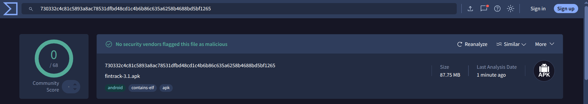

Preguntas Frecuentes y como usar Fintrack
Para preguntas o dudas especificas utilizar el formulario de la pagina principal.
¿Cómo puedo instalar Fintrack?
Instalar Fintrack es sencillo: Comience por dar click en el botón de descargar ahora para instalar el archivo APK, este archivo se guardara en su carpeta de Descargas o Downloads de su dispositivo, una vez descargado usted debe buscar el archivo en la carpeta y ejecutarlo, normalmente el dispositivo puede solicitar permisos de instalación que debera aprobar si decide instalar nuestra aplicación.
¿Cómo manejamos su información?
En Astrosoft nos preocupamos por la seguridad de su información por lo que sus datos estan completamente resguardados en nuestra base de datos y no se envian a ningun lugar ajeno a nuestro control, todas las contraseñas son encriptadas y nosotros no tenemos acceso a la contraseña. La dirección de correo proporcionada puede ser usada para mantener comunicación via gmail en caso de ser requerido. Adicionalmente no registramos ni solicitamos información de ningun tipo de tarjeta o cuenta de banco, por lo que sus datos financieros son solo aquellos ingresados por usted para la gestión y generación de las gráficas.
¿Por qué Fintrack no se encuentra en la PlayStore?
La PlayStore solicita a los desarrolladores un conjunto de reglas y restricciones ademas de cuotas y pagos para tener una oportunidad de subir nuestra aplicación, ¿Qué quiere decir esto? que no hay garantia de que nuestra aplicación sea publicada pese a cumplir con los requisitos solicitados, por lo que optamos que nuestra aplicación sea alojada bajo nuestro total control, permitiendonos brindar apoyo directo a los usuarios.
¿Por qué confiar en Fintrack?
Fintrack es una aplicación de código abierto, esto significa que cualquiera que desee puede ver el código fuente de la aplicación sin embargo no admitimos cambios en el código que no provengan de algun miembro de Astrosoft o nuestros colaboradores de confianza. Adicionalmente adjuntamos evidencia del sitio Virus Total que verifica y analiza nuestro archivo APK buscando vulnerabilidades, virus o malware, para que usted pueda verificar que es totalmente seguro instalar Fintrack.
